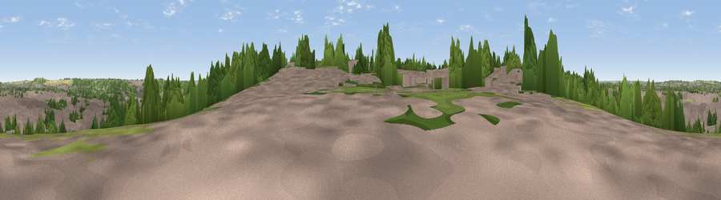

Viewpoint near Chaul End
#41606 in England · top 70% of its area beats it · near Chaul EndThe view, rendered

A 360° render of this exact spot computed from the terrain model, tree cover and land cover — summer colours, afternoon light, calibrated against photographs of famous viewpoints. Real trees, hedges and buildings will differ in detail.
The panorama
Grey silhouette: terrain skyline in each direction (720 bearings, Earth curvature and refraction included). Dashed green: skyline with trees (+15 m) and buildings (+8 m) as obstacles. Blue strip: how far the ground is visible on each bearing.
Where the view opens
Wedge length = distance to the farthest visible ground on that bearing (vegetation-aware). Rings at 10, 25 and 50 km.
What fills the view
59% built-up · 23% woodland · 9% grassland · 9% cropland
Angular shares of the visible panorama (visual magnitude), not map area. Landscape diversity 0.47 (0–1 Shannon).
Key numbers
More beautiful places nearby
The staircase of upgrades: each row has a higher view potential than everything closer. Driving times are estimates from straight-line distance, calibrated against real road routing — check an actual route before setting out.
| Place | Direction | Drive | Score |
|---|---|---|---|
| Viewpoint near Chaul End | W · 1 km | ~3 min | 38.5 |
| Viewpoint near Chaul End | WNW · 2 km | ~6 min | 42.9 |
| Viewpoint near Chaul End | W · 4 km | ~8 min | 53.4 |
| Viewpoint near Dunstable | W · 4 km | ~9 min | 55.3 |
| Warden Hill | NNE · 5 km | ~11 min | 57.3 |
| Viewpoint near Church End | W · 7 km | ~14 min | 65.8 |
| Beacon Hill | WSW · 12 km | ~23 min | 74.1 |
| Viewpoint near Halton | WSW · 22 km | ~36 min | 74.3 |
51.87971, -0.44150 · source: screening · position refined by local search. Computed location — check access rights before visiting.